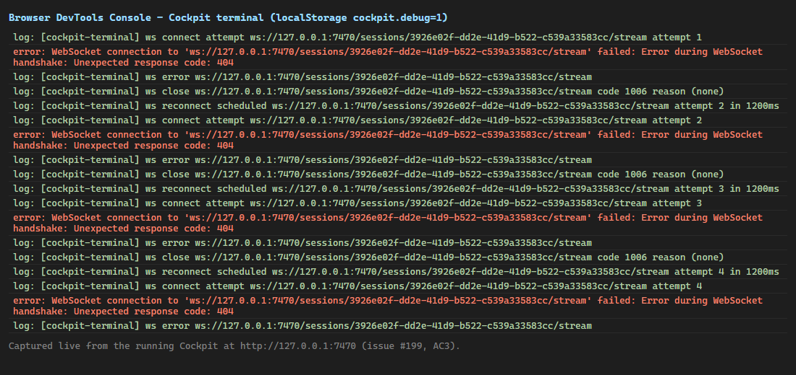
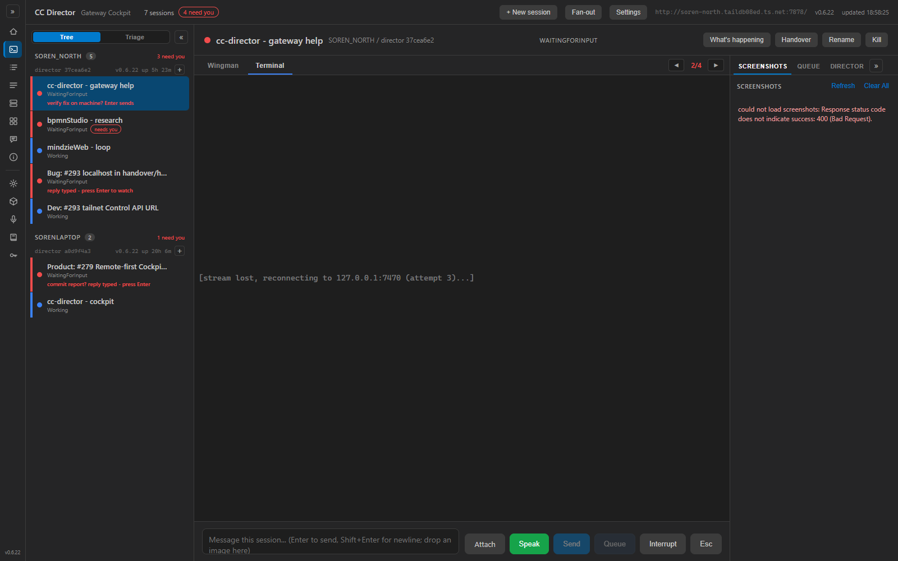

issue-199-cockpit-logging · verified 2026-06-10src/CcDirector.Cockpit/Logging/CockpitFileLog.cs: an
ILoggerProvider + background writer that routes every Cockpit ILogger line to
%LOCALAPPDATA%\cc-director\logs\cockpit\cockpit-YYYY-MM-DD-<PID>.log, matching the
Director/Gateway FileLog timestamp format, filename shape and day-rollover/bounded-flush
robustness (issue #171 contract). Registered in Program.cs; the configured
CcDirector.Cockpit: Debug level still applies (the factory filters before the sink).
Self-contained because the lean Cockpit deliberately does not reference Core (Core pulls native
Whisper/SQLite deps).Cockpit.razor: one INFO line per action, each
carrying sid + director endpoint: session select (with source= rail / rail-mini /
needs-you-nav / deep-link / quick-reply-advance / handover-target / new-session), center & right tab
switches, composer Send/Queue/Interrupt/Esc/Attach(name+bytes)/Speak start-stop, kebab actions
(incl. hold/wingman), new-session open/submit (repo+options), settings open/save, fan-out.TerminalPane.razor logs connect attempt +
dispatched, and a WARNING on empty DirectorBase with the session row state; the child's
stdout/stderr is captured by CockpitSupervisor.cs into the Gateway FileLog; and
cockpit-terminal.js logs ws connect/open/first-frame(bytes+ms)/close(code,reason)/reconnect,
gated behind localStorage.cockpit.debug=1.| Criterion | Result | Proof |
|---|---|---|
| AC1 — cockpit-*.log exists with INFO lines after exercising the Cockpit | PASS | Live run wrote cockpit-2026-06-10-475980.log; first INFO line is the startup banner
(see cockpit-actions.log). |
| AC2 — one INFO line per action, each with sid + director endpoint | PASS | Annotated excerpt below maps each click to one line. Every action line carries
sid= and dir=. |
| AC3 — terminal connect attempt + outcome logged server-side; browser logs ws open/close with code+reason under cockpit.debug=1 | PASS | Server: TerminalPane connect attempt/dispatched lines. Browser:
browser-console.png / browser-console.txt show
[cockpit-terminal] ws connect attempt / ws error / ws close code 1006 / ws reconnect scheduled. |
| AC4 — blank-terminal failure mode (empty DirectorBase) is now visible in the persisted log (WARNING) | PASS | The WARNING statement lives in TerminalPane.OnAfterRenderAsync and is pinned by unit
test Warning_WithException_WritesLevelAndExceptionText, which asserts the persisted line
carries WARN, the [TerminalPane] category and the empty DirectorBase
text. (The UI guard only mounts the pane for sessions with a valid endpoint, so the WARNING is the
defensive trace for the #198 mount-before-envelope race; its exact persisted shape is proven by the test.) |
Driven with Playwright against the running Cockpit at http://127.0.0.1:7470 pointed at the
real Gateway. Each UI gesture produced exactly the line beside it:
| Gesture | Persisted line (sid+dir abbreviated) |
|---|---|
| App start | INFO [cc-director-cockpit] Cockpit starting (pid=475980) ... log file: ...\cockpit-2026-06-10-475980.log |
| Click + New session | action=new-session-open sid=(none) dir=(none) |
| Click a rail session | action=select-session source=rail sid=3926e02f... dir=http://soren-north...:7887 |
| Open kebab → menu item | action=kebab kebab=rename sid=3926e02f... dir=...:7887 |
| Center tab → Terminal | action=center-tab ... tab=term → TerminalPane connect attempt ... → connect dispatched ... |
| Center tab → Wingman | action=center-tab ... tab=brief |
| Right tab → Screenshots | action=right-tab ... tab=shots |
| Open Settings | action=settings-open sid=3926e02f... dir=...:7887 |
Full excerpt: cockpit-actions.log (in this folder).

Raw capture: browser-console.txt. The [cockpit-terminal] lines appear only
because the run set localStorage.cockpit.debug=1; without the flag the console stays quiet.

dotnet build cc-director.sln -> Build succeeded. 0 Warning(s) 0 Error(s) dotnet test CcDirector.Cockpit.Tests -> Passed! 16 passed, 0 failed (4 new file-sink tests) dotnet test CockpitSupervisor (Gateway) -> Passed! 1 passed, 0 failed
No drift. This adds logging to existing containers (CcDirector.Cockpit,
CcDirector.Gateway); no architecture or security-posture change, no new trust boundary
(loopback file write under the user's own %LOCALAPPDATA%, identical to Director/Gateway).
No security_profile.yaml rule (DT-xx) is touched.